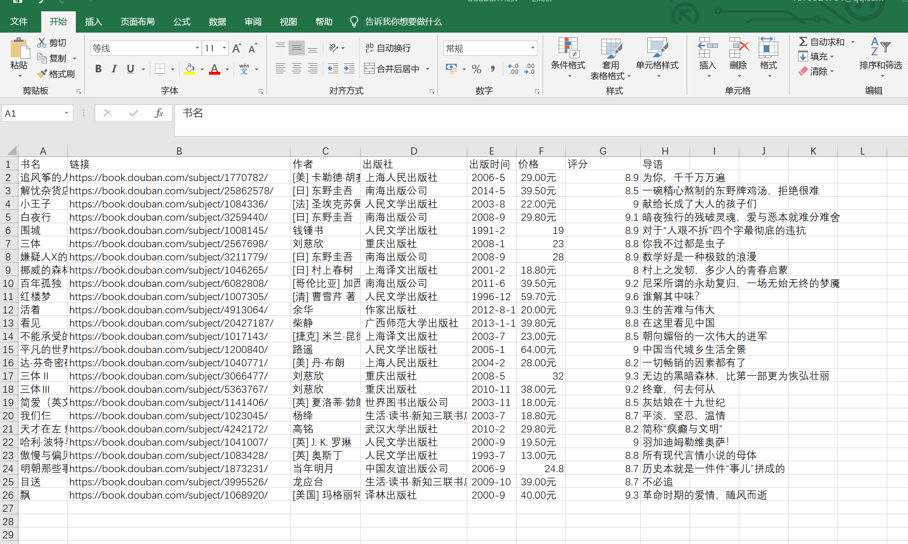

21.24. 案例：爬取豆瓣TOP250的电影和书籍¶
21.24.1. 案例1：爬取豆瓣TOP250的书籍¶
思路¶
使用了xpath的方法。读取xml、html文件特征
手动浏览，查看翻页的规律，找到翻页的标志字段
https://book.douban.com/top250?start=0
https://book.douban.com/top250?start=25
https://book.douban.com/top250?start=50
......
只有10页，每一页25个书籍列表
爬取的信息有：书名、作者、出版社、出版时间、价格、评分，导语
爬出的信息保存到csv文件中
代码示例¶
#!/usr/bin/env python
#-*- coding:utf8 -*-
import requests
from lxml import etree #导入3个库:lxml、csv、requests
import csv
# <p class="pl">[美] 卡勒德·胡赛尼 / 李继宏 / 上海人民出版社 / 2006-5 / 29.00元</p>
#//*[@id="content"]/div/div[1]/div/table[1]/tbody/tr/td[2]/div[2]
fp = open("douban.csv", "wt", newline='', encoding="utf-8")
writer = csv.writer(fp)
writer.writerow(("书名", "链接", "作者", "出版社", "出版时间", "价格", "评分", "导语"))
urls = ["https://book.douban.com/top250?start={}".format(str(i)) for i in range(0, 25, 250)]
#加入请求头部
headers = {
"User-Agent": "Mozilla/5.0 (Windows NT 10.0; WOW64) AppleWebKit/537.36 (KHTML, like Gecko) Chrome/68.0.3440.84 Safari/537.36"
}
for url in urls:
html = requests.get(url,headers=headers)
selector = etree.HTML(html.text)
infos = selector.xpath('//tr[@class="item"]')
for info in infos:
name = info.xpath("td[2]/div[1]/a/@title")[0]
url = info.xpath("td[2]/div[1]/a/@href")[0]
book_infos = info.xpath("td[2]/p/text()")[0]
author = book_infos.split('/')[0]
publisher = book_infos.split('/')[-3]
date = book_infos.split('/')[-2]
price = book_infos.split('/')[-1]
rate = info.xpath("td[2]/div[2]/span[2]/text()")[0]
comments = info.xpath("td[2]/p[2]/span/text()")
comment = comments[0] if len(comments) != 0 else "空"
writer.writerow((name,url,author,publisher,date,price,rate,comment))
fp.close()
截图如下：
CSV获取的数据
把评分为9.0的书籍保存到book_out.csv文件中¶
# 打开的时候必须用encoding='utf-8'，否则报错
with open('douban-Top250.csv', encoding='utf-8') as rf:
reader = csv.reader(rf)
# 读取头部
headers = next(reader)
with open('books_out_9.0.csv', 'w', newline='', encoding='utf-8-sig') as wf:
writer = csv.writer(wf)
# 把头部信息写进去
writer.writerow(headers)
for book in reader:
# 获取评分
score = book[6]
# 把评分大于9.0的过滤出来
if score and float(score) >= 9.0:
writer.writerow(book)
21.24.2. 案例2：爬取豆瓣TOP250的影评¶
代码示例
#!/usr/bin/env python
# -*- coding:utf8 -*-
# auther; 18793
# Date：2019/9/18 14:09
# filename: 爬取豆瓣TOP250影评.py
from urllib import request
import re
import json
"""
翻页查看
https://movie.douban.com/top250?start=0&filter=
https://movie.douban.com/top250?start=25&filter=
https://movie.douban.com/top250?start=50&filter=
"""
class MovieTop(object):
def __init__(self):
self.start = 0
self.param = '&filter='
self.headers = {
"User-Agent": "Mozilla/5.0 (Windows NT 10.0; Win64; x64) AppleWebKit/537.36 (KHTML, like Gecko) Chrome/76.0.3809.132 Safari/537.36"}
self.move_list = []
self.file_path = "./movie_spider.txt"
def get_page(self):
"""
获取页数
:return:
"""
try:
url = "https://movie.douban.com/top250?start={}".format(self.start)
req = request.Request(url, headers=self.headers)
response = request.urlopen(req)
page = response.read().decode('utf-8')
page_num = (self.start + 25) // 25
print("正则抓取{}页数据....".format(page_num))
self.start += 25
return page
except request.URLError as e:
if hasattr(e, 'reason'):
print("抓取失败，失败原因:{}".format(e.reason))
def get_movie_info(self):
pattern = re.compile(
'<div class="item">.*?<span class="title">(.*?)</span>.*?<span class="other"> / (.*?)</span>.*?<span class="playable">(.*?)</span>.*?<p class="">(.*?)</p>.*?<span class="rating_num" property="v:average">(.*?)</span>.*?<span>(.*?)</span>.*?<span class="inq">(.*?)</span>',
re.S)
while self.start <= 225:
html = self.get_page()
moves_info = re.findall(pattern, html)
for info in moves_info:
Movie_name = info[0]
Keyword = info[1]
isPlay = info[2]
info_yanyuan = str(info[3]).strip()
score = info[4]
number_of_People = info[5]
Summary = info[6]
self.move_list.append([Movie_name, Keyword, isPlay, info_yanyuan, score, number_of_People, Summary])
def write_text(self):
print("开始向文件写入数据....................")
File_top = open(self.file_path, "w", encoding='utf-8')
try:
for movie in self.move_list:
File_top.write("电影名称：" + movie[0] + "\r\n")
File_top.write("电影关键词：" + movie[1] + "\r\n")
File_top.write("是否可播放：" + movie[2] + "\r\n")
File_top.write("导演/演员信息：" + movie[3] + "\r\n")
File_top.write("电影评分：" + movie[4] + "\r\n")
File_top.write("评论人数：" + movie[5] + "\r\n")
File_top.write("电影精髓：" + movie[6] + "\r\n")
print("抓取结果写入文件成功.........")
except Exception as e:
print(e)
finally:
File_top.close()
def main(self):
print("开始从豆瓣电影抓取数据....................")
self.get_movie_info()
self.write_text()
print("数据抓取完毕.............")
if __name__ == '__main__':
t1 = MovieTop()
t1.main()